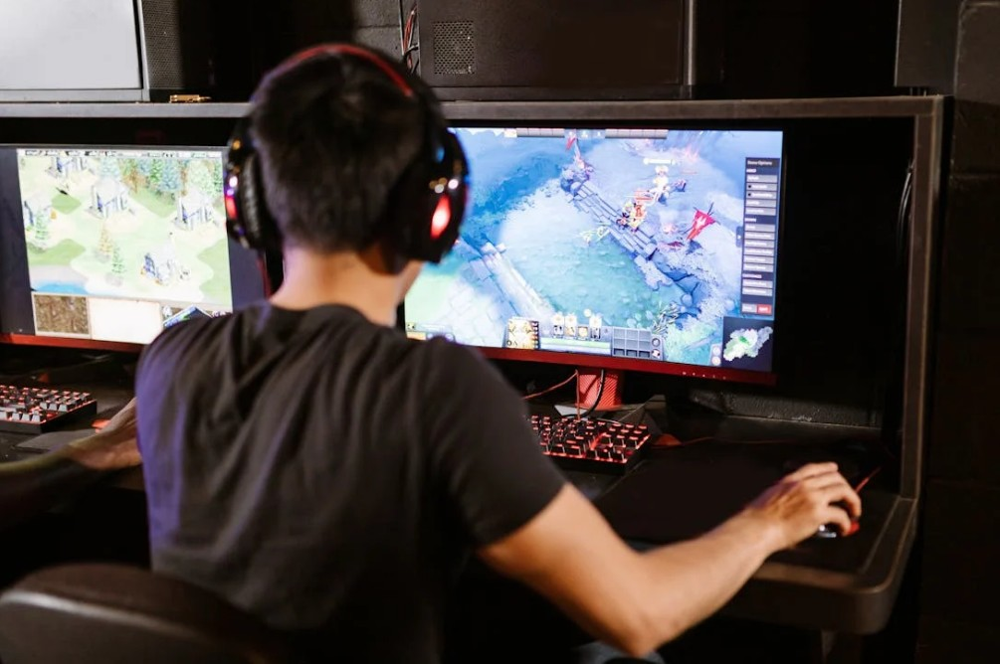

UFLA assina parceria com Ministério do Esporte para estruturação da área de jogos eletrônicos e eSports no Brasil
Na última semana, a Universidade Federal de Lavras (UFLA) e o Ministério do Esporte (MEsp) formalizaram um Acordo de Cooperação Técnica para que o País avance na estruturação do campo dos jogos eletrônicos e eSports. A conjunção de esforços objetiva o desenvolvimento de pesquisas e atividades de ensino e extensão sobre essa modalidade de jogos, contemplando as dimensões socioculturais, educacionais e esportivas. Onze metas estão previstas no plano de trabalho, que terá duração de dois anos.
As ações a serem realizadas pela equipe da UFLA incluem iniciativas como mapear grupos de pesquisa em jogos eletrônicos e eSports em universidades brasileiras, bem como estudos existentes na área, de modo a promover a interação entre os grupos; estabelecer diálogos com confederações esportivas; elaborar cartilhas de orientação sobre uso de dopings, cyberbullying, saúde mental nos eSports, entre outras temáticas; pesquisar o potencial educativo da modalidade, além de outros pontos previstos.
Na Universidade, a parceria é liderada pelo Núcleo de Estudos em Jogos Eletrônicos e eSports (Neje), coordenado pelo professor da Faculdade de Ciências da Saúde (FCS), Departamento de Educação Física (DEF), Raoni Perruci Toledo Machado. Também fazem parte da equipe inicial o professor da UFLA Alex Sousa Pereira, os professores da Universidade de São Paulo (USP) Katia Rubio e Luciano Sampaio Duque Silva, e o professor da Universidade Estadual de Maringá (UEM) Rafael Campos Veloso.
De acordo com o professor Raoni, as conversas com membros do MEsp se iniciaram em 2024, no contexto de criação da Diretoria de eSports/MEsp. “Fomos procurados para auxiliar nas fundamentações que precisavam ser estruturadas naquele momento, e este acordo agora formaliza essa colaboração e a expande. Sinto-me muito honrado em fazer parte desse momento inicial, em que a área se consolida no País, e estão se estabelecendo as bases de entendimento dos jogos eletrônicos no Brasil, o que vai refletir em tudo que virá pela frente”, avalia Raoni. Acesse o texto no Portal da Ciência e saiba mais sobre os jogos eletrônicos como fenômeno cultural.
O diretor de eSport do MEsp, Marcio Zuba de Oliva, afirmou, em publicação do Ministério, que esse é um grande passo para os eSports no Brasil. “Com foco educacional e pedagógico, voltado a temas que exigem cuidado e responsabilidade do Ministério do Esporte — como a criação de cartilhas e estratégias de prevenção e combate à manipulação de resultados nos games, ao cyberbullying, aos impactos na saúde mental dos jogadores, às questões de gênero, ao uso de substâncias proibidas (doping) e às práticas envolvendo as chamadas loot boxes, entre outros”.
O diretor de eSport do MEsp, Marcio Zuba de Oliva, afirmou, em publicação do Ministério, que esse é um grande passo para os eSports no Brasil. “Com foco educacional e pedagógico, voltado a temas que exigem cuidado e responsabilidade do Ministério do Esporte — como a criação de cartilhas e estratégias de prevenção e combate à manipulação de resultados nos games, ao cyberbullying, aos impactos na saúde mental dos jogadores, às questões de gênero, ao uso de substâncias proibidas (doping) e às práticas envolvendo as chamadas loot boxes, entre outros”.
O chefe do DEF, professor Rubens Antonio Gurgel Vieira, celebra a importância da parceria. “Ficamos todos muito felizes, porque esse é um marco, tem relevância histórica: estamos participando ativamente desse movimento que fortalece a importância dos jogos eletrônicos no Brasil, com o reconhecimento do Governo Federal. A Educação Física trata desses jogos desde os anos 1980, mas havia um certo preconceito, com a modalidade sendo relacionada ao sedentarismo e à violência. Mas tem ficado cada vez mais claro que os jogos eletrônicos são, na verdade, parte da cultura, e são objetos de estudo reconhecidos. Que a parceria seja frutífera, favoreça a formação dos graduandos e seja um ponto de apoio importante no contexto nacional”.
Para o reitor da UFLA, professor José Roberto Soares Scolforo, a colaboração está alinhada ao papel da Instituição no contexto nacional. “Os jogos eletrônicos e os eSports já são uma realidade e estamos atentos aos temas que impactam a sociedade. Cabe à Universidade assumir seu papel nesse cenário, produzindo conhecimento, formando profissionais e contribuindo para políticas públicas que garantam inclusão, ética e responsabilidade nesse ambiente digital. Com esta parceria com o Ministério do Esporte, reafirmamos nossa vocação de integrar ensino, pesquisa e extensão para promover e acompanhar a transformação social”, enfatiza.